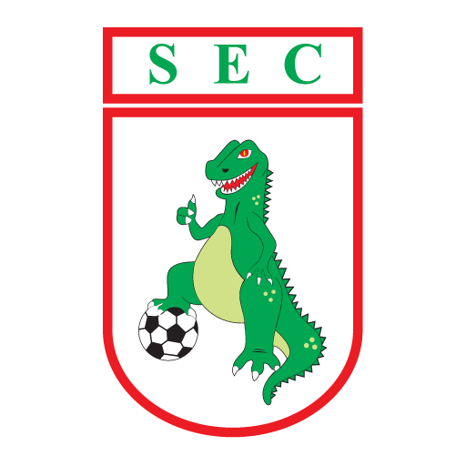

>
Sousa
Apelido: "Dino"
Sousa-Brasil
Estádio: Marizão
Capacidade: 12.400
Material esportivo: King Sports
Mascote: Dinossauro
Patrocinador: Pix Bet
Presidente: Aldeone Abrantes
História: O Sousa Esporte Clube foi fundado em 10 de julho de 1991 com o apoio do empresário Valdeci Oliveira e outros abnegados do futebol sousense. O clube já nasceu profissionalizado com o objetivo de recolocar a cidade de Sousa no cenário esportivo paraibano.
Estaduais:
Campeonato Paraibano:
1994 e 2009
Paraibano - Segunda Divisão:
1991